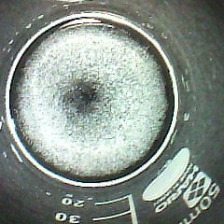
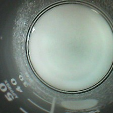
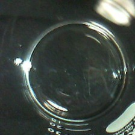

This can identify NaCl, NaHCO3 and Citric Acid.
Attension! I’ve only tested under 12 degrees celcius.
It only watches how much powder were left in the beaker.
Here’s how to use;
When you find unknown white powder,
1. Put 2.0 g of the powder to 50 mL beaker or similar container.
2. Put 4.0 mL of water into the beaker.
3. Place the beaker on a black background.
4. Use a web camera to check what this powder is. (Just take from upside, not the side.)
Here's a example of the mixture;
NaCl NaHCO3 Citric acid
  